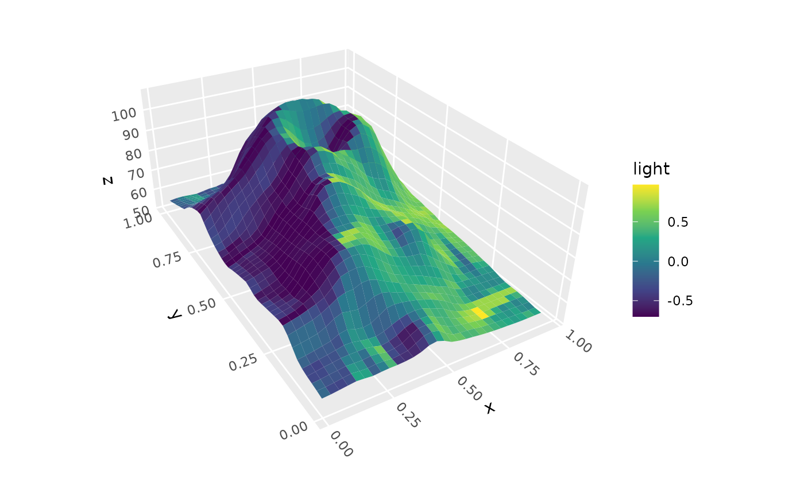

Creates a lighting specification object that supports both directional lighting (parallel rays like sunlight) and positional lighting (point light sources with per-face light directions and optional distance falloff), for use with 3D polygon geoms.
Usage
lighting(
method = "diffuse",
direction = c(1, 1, 1),
position = NULL,
distance_falloff = FALSE,
quanta = NULL,
blend = "neither",
blend_strength = 1,
blend_mode = "hsv"
)Arguments
- method
Character string specifying lighting model:
"diffuse": Atmospheric lighting with soft shadows (includes negative values for subsurface scattering effect)"direct": Direct lighting with hard shadows (surfaces facing away are completely dark)"normal_rgb": Map surface normals to RGB colors"normal_x","normal_y","normal_z": Individual surface normal components (with higher positive values indicating a surface faces more directly toward the positive end of a given dimension)
Default is "diffuse".
- direction
Numeric vector of length 3 specifying direction in 3D space that light comes from for directional lighting. The default is
c(1, 1, 1), giving diagonal lighting from the positive corner. Common examples:c(0, 0, 1)gives overhead lighting,c(1, 0, 0)lights surfaces facing the positive x direction, andc(-1, -1, 0)lights surfaces facing negative x-y edge. At least one value must be non-zero. Values are automatically normalized, so magnitude doesn't matter, only sign and relative magnitude. This argument is ignored ifpositionis provided.- position
Numeric vector of length 3 specifying light source position in data coordinate space for positional lighting. When specified, each face gets its own light direction calculated from the light position to the face center. Mutually exclusive with
direction. Default is NULL (use directional lighting).- distance_falloff
Logical indicating whether to apply distance-based intensity falloff for positional lighting using inverse square law (intensity ∝ 1/distance²). Only used when
positionis specified. Default is FALSE.- quanta
Integer number of discrete quantization levels, or NULL for continuous lighting. When specified, continuous lighting values are binned into this many discrete levels:
For
"diffuse": Creates equal-width bins across -1, 1 rangeFor
"direct": Creates one bin for negative values, and (quanta-1) bins across 0, 1 range
Default is NULL (continuous lighting).
- blend
Character string specifying which color aesthetics to blend with lighting. Options: "neither" (no blending), "fill" (blend fill colors only), "color"/"colour" (blend border colors only), or "both" (blend both fill and border). Default is "neither".
- blend_strength
Numeric value in the range 0–1 controlling the intensity of lighting blending. 1.0 gives full black-to-white range, 0.5 gives subtle lighting effects. Only used when
blendis not "neither". Default is 1.0.- blend_mode
Character string specifying color blending mode when
blendis not "neither":"hsv": Modifies HSV value component (fades to bright colors at high end, black at low end)"hsl": Modifies HSL lightness component (fades to white at high end, black at low end)
Default is "hsv".
Details
There are two approaches for adding lighting to a plot. The first is to use blending. This lets you add light and shadow effects while also specifying fill/color arguments or aesthatics through standard ggplot2 methods. Blending alters these colors by brightening and darkening them.
The second approach is to use the computed light variable directly in your aesthetic mapping, such as
aes(fill = after_stat(light)). This gives more control over you map lighting values onto color
scales, but can't be mixed with other sources of color info.
It is also possible to combine these two approaches. For example, using blend = "fill",
after_stat(light), and scale_fill_viridis_c() will produce a higher-contrast version of
the viridis palette (though the guide will not reflect the blending component).
Examples
library(ggplot2)
p <- ggplot(mountain, aes(x, y, z)) +
coord_3d(pitch = 0, roll = 120, yaw = 200,
scales = "fixed", ratio = c(1, 1.5, .01)) +
scale_fill_viridis_c() + scale_color_viridis_c()
p + stat_surface_3d(aes(fill = after_stat(light)),
light = lighting("diffuse", direction = c(-1, 0, 1)))
